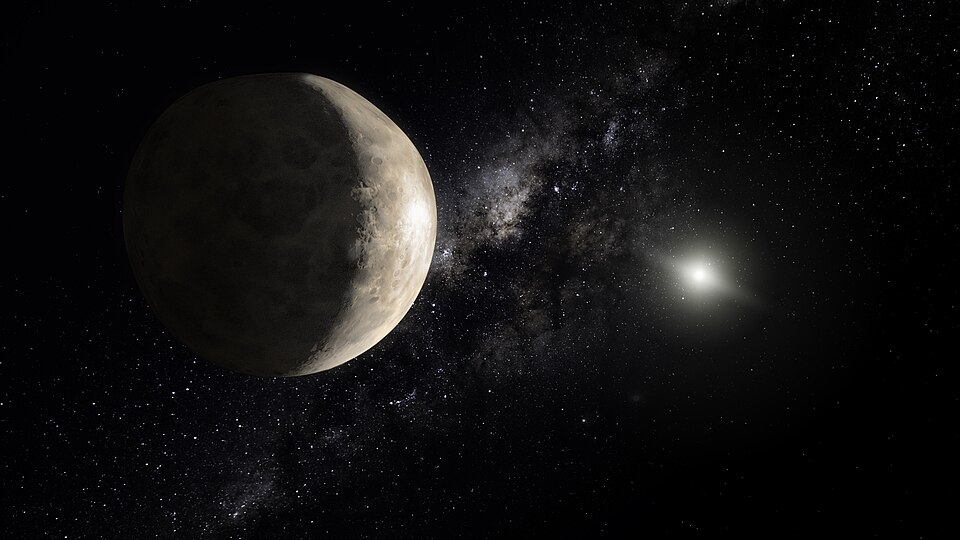

Makemake and its moon, Hubble Space Telescope
Makemake is a dwarf planet located in the Kuiper belt.
It was discovered in 2005 and is named after the Rapa Nui god-creator.
The dwarf planet has a reddish color caused by the high amount of nitrogen and hydrocarbons, which react and form tholins.
It also has a high albedo, making it whiter than other dark red TNOs.
Signs of geothermal activity were also detected on Makemake.
Makemake has one unnamed satellite, nicknamed MK2.
Makemake was discovered by a Mike Brown-led team in March 2005 at the Palomar observatory in California.
At the time, his team was searching for large objects beyond the orbit of Neptune, suspecting that Pluto was not the only similarly-sized body there.
They found partial success with the discovery of objects like Quaoaor, Sedna, and Orcus in 2002, 2003 and 2004 respectively.
During the last four months, the team also discovered two larger objects - Haumea and Eris.
These three were larger than any other object in this region except Pluto, though Eris was initially thought to be larger.
The three discoveries were announced on July 29 the same year (Haumea was also announced two days earlier by a different team).
The three new discoveries challenged the status of Pluto as a planet and in 2006 the IAU passed a resolution classifying the fours as a separate class of onjects - dwarf planets.
In April 2015, a satellite was discovered around Makemake - S/2015 (136472) 1.
Makemake is named after the god-creator of the Rapa Nui people.
The name was chosen because the discovery was made around Easter, similarly to Rapa Nui island (also known as Easter Island).
Makemake has a minor planet number of 136472 and had a provisional name 2005 FY9.
Orbit and rotation
Makemake completes an orbit around the Sun every 306 years.
This is because of its great distance, with a semi-major axis of 45.4 AU.
For a trans-Neptunian object, it has a relatively moderate eccentricity of 0.16, but this places its perihelion at 38.1 AU and its aphelion at 53.8 AU.
Its inclination is 29°, similar to that of Haumea.
Makemake rotates around its axis, completing one rotation every 22.8 hours.
Makemake is a "dynamically hot" classical Kuiper belt object (or cubewano), whic means that it is not resonant with Neptune (it is close to 13:7), but unlike the "cold" cubewanos, it has a relatively high inclination.
Original estimates for the size of Makemake concluded a diameter from 1360 to 1480 km.
Later, during a stellar occultation, the dimensions were refined down to 1430 km
It is most likely a round object, earning it the title of a dwarf planet.

An artist's impression of what Makemake might look like, depicting a uniform, bright and reddish surface.
The density of Makemake is 1.67, smaller than those of Pluto, Charon, Eris, and Haumea, placing it on the lower end of the most likeliest dwarf planets (similar to Quaoar).
This suggests a composition of silicate rock in the core and ice in the mantle around a third of the mass.
Makemake has a high geometric albedo of 0.82 and has a reddish color.
The color is typical for many TNOs, rich in methane and nitrogen, which react to form tholins under cosmic and solar radiation.
In fact, methane has been detected on the surface of Makemake, constituting much of the surface.
Nitrogen has also been detected, albeit at a much lower concentration than on Pluto.
This would suggest the depletion of nirogen during its natural history.
Nevertheless, it is in high enough amounts that tholins have formed, giving the reddish color.
Ethylene and smaller amounts of ethylene, acetylene, and propane have also been detected, which have formed in a similar manner as the tholins, this time without nitrogen.
Data from the James Webb Space Telescope shows deuterium to hydrogen ratios that would suggest internal production.
Eris exhibits the same.
This means that Makemake could have a subsurface ocean and is likely geologically active.
Makemake's surface features bright icy plains of methane and nitrogen, similar to Pluto.
Photometry data of the Spitzer and Herschel telescopes have also detected dark spots constituting around 3 to 7% of the surface.
There are two possibilities for the low albedo spots.
One is that they are dark plains rich in tholins, similar to the maculae on Pluto.
The second possibility is that this drop in albedo could be due to the then unknown satellite transiting over Makemake.
So far, no atmosphere has been detected on Makemake, but it is suggested that, similarly to Pluto, a transient atmosphere of methane and nitrogen builds up when approaching perihelion.
This gas buildup could explain the absence of nitrogen, but the main gas that was noticed to escape from Pluto is methane instead.
Makemake has one known satellite - S/2015 (136472) 1.
It is around 175 km in diameter.
Makemake has not been visited by a spacecraft.
It is estimated that it would take 16 years to reach Makemake with a Jupiter gravity assist, current technology, and a launch date of August 24, 2036.
External links
{% include catplanets.html %}